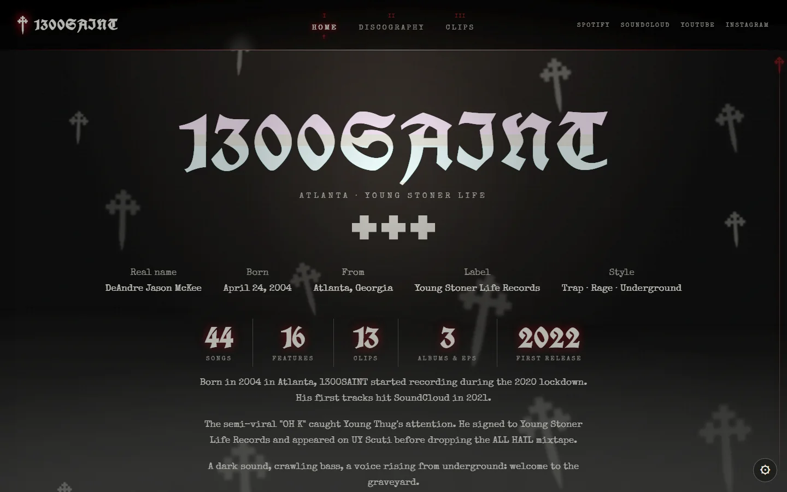
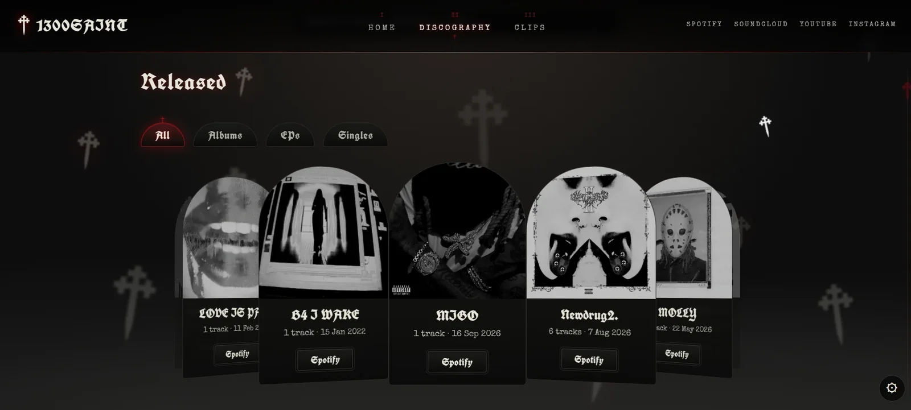
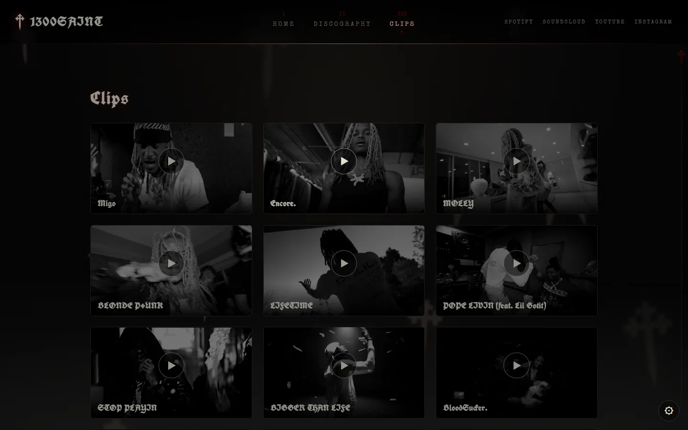

Projet Web
SAINT.
ARCHIVE
Site fan non officiel dédié à 1300SAINT, rappeur d'Atlanta : discographie complète classée par année, clips, exclusivités SoundCloud et une direction artistique gothique sombre (typographie blackletter, croix lumineuse, animations).
Contexte
Projet personnel : un site fan non officiel pour réunir tout l'univers de 1300SAINT au même endroit.
Mon rôle
Conception, développement et intégration web, optimisation de l'expérience utilisateur, tests, mise en ligne et maintenance.
Livrable
Un site en ligne avec discographie, clips et une direction artistique gothique sur mesure.
Captures d'écran

Page 1
Accueil
Présentation de l'artiste (bio, chiffres clés) dans une ambiance gothique : typographie blackletter, croix animées et section interactive « The Graveyard ».

Page 2
Discographie
Toute la discographie (albums, EPs, singles) dans un carrousel à faire glisser, avec recherche et lien direct vers Spotify.

Page 3
Clips
Les clips de l'artiste réunis dans une grille de vignettes, avec lecture directe.
Fonctionnalités du site
Carrousel 3D
Discographie en cylindre de cartes, avec filtres et recherche.
Pages projet
Tracklist, pochette en grand et liens Spotify / SoundCloud pour chaque sortie.
Lecteur intégré
Écoute d'extraits Spotify et SoundCloud directement sur la page.
The Graveyard
Un cimetière interactif : une pierre par année, un clic pour l'explorer.
Ambiance gothique
Transitions en ombre rampante, croix animées, curseur et barre de défilement sur mesure.
Réglages
Luminosité, couleurs, mode léger et police lisible, sauvegardés dans le navigateur.